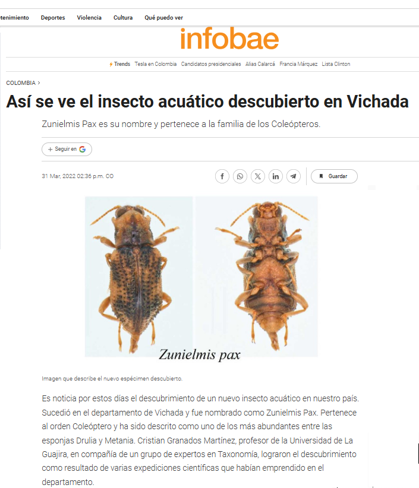

Prensa y Noticias
📰 Cobertura de Prensa y Medios
Recopilación de noticias y menciones en medios de comunicación sobre investigaciones, descubrimientos científicos y actividades académicas.
2020s - Publicaciones y Descubrimientos Recientes
2025
🔬 Nueva Publicación sobre Diversidad de Macroinvertebrados
Enero 2025
Publicación del artículo científico “Effects of human disturbance gradient on aquatic macroinvertebrate diversity: A study in a river of the Sierra Nevada de Santa Marta” en coautoría con Meyer E. Guevara Mora, José Elí Rincón Ramírez y Esmaragdo Herrera Zambrano.
El estudio analiza cómo las variables ambientales asociadas con diferentes niveles de actividad humana moldean las comunidades de macroinvertebrados en ríos neotropicales.
Fuente: ResearchGate - Perfil académico
2023
📚 Libro sobre Descomposición de Hojarasca en Manglares
Octubre 2023
Publicación del libro “Descomposición de la hojarasca foliar en mangles del delta del Río Ranchería, La Guajira”, investigación sobre procesos ecológicos en ecosistemas de manglar del Caribe colombiano.
Fuente: ResearchGate - Publicaciones científicas
2022
🦗 Descubrimiento de Zunielmis pax - Nuevo Género y Especie de Coleóptero Acuático
Febrero 2022
Titular: “Graduado de Unimagdalena descubre el ‘Zunielmis pax’, un nuevo género y especie de insecto acuático”

Link de la noticia: https://www.semana.com/mejor-colombia/articulo/profesor-universitario-descubre-nuevo-insecto-de-agua-en-el-vichada/202223/
Medios: Opinion Caribe, Tüü Pütchika, ASCUN, Universidad de La Guajira
El biólogo magíster Cristian Enrique Granados Martínez descubrió un nuevo género y una nueva especie de insecto acuático en el departamento de Vichada. El género y la especie denominada Zunielmis pax pertenecen al orden Coleóptero y se describen como uno de los más abundantes de las esponjas Drulia y Metania en el Río Bita.
Origen del nombre:
- Zuni: Reconocimiento a la doctora María del Carmen Zúñiga, pionera del estudio taxonómico de la familia Elmidae en Colombia
- Elmis: Sufijo asociado al tipo de género del animal colectado
- Pax: Del latín “paz”, porque la investigación, la conservación de la biodiversidad y el avance de la ciencia en el país dependen de escenarios pacíficos

Link de descarga de la noticia: https://www.infobae.com/america/colombia/2022/03/31/asi-se-ve-el-insecto-acuatico-descubierto-en-vichada/
Contexto del descubrimiento:
- Resultado de expediciones al Río Bita (Vichada) con Instituto Alexander von Humboldt
- Trabajo en colaboración con Marcela González Córdoba (CIEMEP) y Verónica Manzo (IBN-CONICET, Argentina)
- Publicado en revista científica internacional Zoosystematica Rossica
- DOI: 10.31610/zsr/2021.30.2.248
- Cuarta nueva especie descubierta por el profesor para la ciencia
Declaraciones del investigador:
“Este hallazgo es un aporte importantísimo al conocimiento de la biodiversidad de Colombia, sobre todo, de estas zonas que hoy en día están siendo afectadas por el conflicto armado y por la deforestación. Gran parte de la Universidad ha sido fundamental para la proyección mía como científico.”
Importancia:
Esta especie fue colectada en zonas que estuvieron completamente blindadas por el conflicto armado durante mucho tiempo. El descubrimiento ubica a la Universidad de La Guajira como un referente en el estudio e investigación de los macroinvertebrados acuáticos en el país.
Enlaces:
2017-2019 - Descubrimientos de Nuevas Especies
2019
🌿 Participación en Libro sobre Biodiversidad del Orinoco
Año: 2019
Titular: “Docente de Uniguajira participa en nueva publicación científica sobre biodiversidad del Orinoco”
Medio: Portal de Noticias - Universidad de La Guajira
El profesor Cristian Enrique Granados Martínez participó en la producción del libro sobre la biodiversidad de la Reserva Natural Bojonawi, ubicada a orillas del río Orinoco y la planicie de inundación en Vichada, Colombia.
Detalles del proyecto:
- Colaboración interinstitucional con universidades de Antioquia, del Rosario, Nacional de Colombia, de Los Andes y del Tolima
- Investigación centrada en la descripción de aves, mamíferos y macroinvertebrados acuáticos
- Elaboración del capítulo cuatro sobre macroinvertebrados acuáticos
- Quinta participación en la serie de libros sobre biodiversidad editada por el Instituto Alexander Von Humboldt
Importancia: Los macroinvertebrados acuáticos son determinantes en la calidad del agua y son indicadores del estado ambiental de las cuencas.
Declaración del investigador:
“Intervenir en esta producción científica significa aportar un grano de arena en el reconocimiento de la biodiversidad de lugares recónditos del país, donde es muy difícil acceder y de los que se tiene muy poca información.”
Enlaces relacionados:
2017
🏆 Reconocimiento Gaviota Dorada - Universidad del Magdalena
Año: 2017
Titular: Facultad de Ciencias Básicas fortalece y potencia vínculo con graduados del Programa de Biología
Medio: Universidad del Magdalena
El magíster Cristian Enrique Granados Martínez recibió la distinción ‘Gaviota Dorada’ de la Universidad del Magdalena, reconocimiento a graduados destacados por su calidad humana, académica y profesional en el ejercicio de sus actividades.
Contexto del reconocimiento:
- Docente investigador en la Universidad de La Guajira
- Investigador del Instituto Alexander Von Humboldt para las expediciones de Colombia BIO
- Reconocido por dejar muy en alto el nombre de la Universidad del Magdalena en diferentes escenarios laborales
Declaraciones de la Decana:
La doctora Sandra Vilardy Quiroga, decana de la Facultad de Ciencias Básicas, expresó: “Fue un espacio muy emotivo donde se fortalecen las relaciones de los graduados… destacar lo que hacen nuestros biólogos en diferentes escenarios laborales dejando muy en alto el nombre de la Universidad del Magdalena.”
Enlaces:
🦟 Descubrimiento de Tricorythodes Macuira en la Serranía de la Macuira
Año: 2017
Descubrimiento y descripción de la especie de insecto acuático Tricorythodes Macuira, hallada en la Serranía de la Macuira, La Guajira.
Contexto:
- Realizado durante pasantía de investigación en el Instituto de Biodiversidad Neotropical, Universidad de Tucumán, Argentina
- Primera especie de este género descubierta en La Guajira
- Contribución al conocimiento de la biodiversidad de ecosistemas acuáticos de la región
Fuente: Portal Universidad de La Guajira
2016-2017
🦋 Descubrimiento de Dos Nuevas Especies de Moscas Efímeras
Año: 2016-2017
Titular: “Docente de Uniguajira descubre dos nuevas especies de insectos acuáticos”
Medio: Portal de Noticias - Universidad de La Guajira
El profesor Cristian Enrique Granados Martínez descubrió dos nuevas especies de moscas efímeras del género Campsurus, resultado de expediciones científicas en los departamentos de Vichada y Meta.
Especies descubiertas:
- Campsurus vichada
- Descubierta en el río Tomo, departamento del Vichada
- Expedición realizada a través del programa Colombia BIO
- Territorio anteriormente afectado por conflicto armado
- Campsurus cristales
- Descubierta en Caño Cristales, departamento del Meta
- “El río de los cinco colores” en el Área de Manejo Especial La Macarena
- Expedición organizada por Instituto Humboldt, Colciencias y varias universidades
Contexto de las expediciones:
- Programa Colombia BIO: iniciativa para fortalecer conocimientos científicos y fomentar la conservación de la biodiversidad
- Acceso a zonas previamente blindadas por el conflicto armado
- Colaboración de investigadores de múltiples instituciones nacionales
Declaraciones del investigador:
“Las zonas intervenidas estuvieron afectadas y blindadas por el conflicto armado durante mucho tiempo. Este trabajo reconoce el apoyo de la Universidad de la Guajira y su importancia como referente en el estudio de los macroinvertebrados acuáticos a nivel nacional y regional.”
Enlaces:
2016
🦎 Nuevo reporte de un insecto acuático para el Caribe - Parque Nacional Natural Tayrona
Año: 2016
Titular: “UNIMAGDALENA apoya procesos de investigación para conservación del Parque Nacional Natural Tayrona”
Medio: Ministerio de Educación Nacional
Investigación dirigida por el docente Javier Rodríguez (Director del Grupo de Investigación GIEN), los egresados del programa de Biología Cristian Granados y Daniel Serna.
Hallazgo importante:
Investigación que arrojó el descubrimiento de una especie perteneciente al género Cabecar..
Contexto:
- Acuerdo específico número 011 de 2015 entre Unidad de Parques Nacionales y Universidad del Magdalena
- Análisis de macroinvertebrados acuáticos en quebradas Mason, Santa Rosa y San Lucas del Parque Tayrona
- Estudio del estado de disponibilidad del agua en quebradas de la Reserva Natural
Enlaces:
2015-2018 - Serie de Libros sobre Biodiversidad
Participación en Serie Editorial del Instituto Humboldt
El profesor Granados Martínez ha participado en cinco libros de la serie sobre biodiversidad editada por el Instituto de Investigación de Recursos Biológicos Alexander Von Humboldt:
- 2015: Cuencas Peri-continentales de Colombia, Ecuador, Perú y Venezuela
- 2017: Biodiversidad del río Bita, Vichada, Colombia
- 2017: Fauna de Caño Cristales, Sierra La Macarena, Meta, Colombia
- 2018: Biodiversidad de La serranía de La Macarena, Meta, Colombia. Parte I: ríos Guayabero medio, Bajo Lozada y Bajo Duda
- 2019: Biodiversidad de la Reserva Natural Bojonawi, Orinoco, Vichada
Impacto: Estas publicaciones representan un aporte fundamental al reconocimiento de la biodiversidad en lugares recónditos del país donde es difícil acceder y de los que se tiene muy poca información.
🎓 Reconocimientos Académicos y Logros
Investigador Asociado - Minciencias
Miembro de los grupos de investigaciónes Ecología y Biodiversidad de Ecosistemas Tropicales (EBET) y Biotecnología
Distinción Gaviota Dorada - Universidad del Magdalena (2017)
28 publicaciones científicas con más de 93 citaciones
4 nuevas especies descubiertas para la ciencia:
- Zunielmis pax (2022) - Nuevo género y especie
- Tricorythodes macuira (2017)
- Campsurus vichada (2016)
- Campsurus cristales (2016)
🌍 Áreas de Investigación Destacadas
Expediciones a zonas de postconflicto:
- Departamento del Vichada (Río Bita, Río Tomo)
- Departamento del Meta (Caño Cristales, La Macarena)
- Sierra Nevada de Santa Marta
- Parque Nacional Natural Tayrona
- Serranía de la Macuira
Colaboraciones institucionales:
- Instituto Alexander Von Humboldt
- Universidad del Magdalena
- Universidad de La Guajira
- Universidad de Antioquia
- Universidad del Rosario
- Universidad Nacional de Colombia
- Universidad de Los Andes
- Universidad del Tolima
- Universidad de Tucumán, Argentina
📞 Contacto de Prensa
Para entrevistas, información adicional o cobertura de investigaciones:
📧 Email: cegranados@uniguajira.edu.co
🏛️ Institución: Universidad de La Guajira
🔬 Grupo de Investigación: Biotecnología / EBET
📍 Ubicación: Riohacha, La Guajira, Colombia
🔗 Enlaces de Interés
- ResearchGate - Perfil científico
- ORCID
- Google Scholar
- Universidad de La Guajira
- Universidad del Magdalena
Última actualización: Noviembre 2025